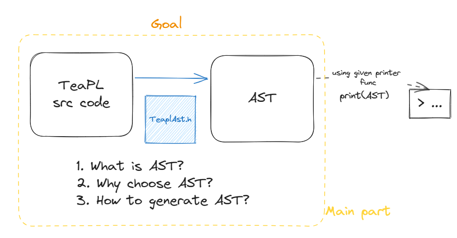

lab2-TeaPL前端开发报告
本文还没写完，后面可能会补吧（也可能不会
相关知识

我们首先回答三个问题：
- 什么是AST？
- 为什么要使用AST？
- 怎样生成AST？
AST
我们知道从源代码到目标代码需要经过这样的流程：

而在这次实验中我们完成的是从前端到中间层的一个衔接，也就是：

让我们回顾一下这几个步骤。
回顾：词法解析
Q:
- 理论上要达到什么目标？怎么实现的？
- 实践中如何使用？
A：
-
理论上，词法解析完成了分词工作并对不符合词法要求的输入作出反应，依据是词法声明。词法声明我们会使用**正则语言（Regex）**进行表达。
简单举个栗子，识别一个输入是不是合法的邮箱，这就是词法解析的一种。

要实现这样一个“喂词法声明，生成词法分析规则”的词法解析器，一般经过如下流程：

其中NFA是非确定型有穷自动机，指的是对于FSA的任意一个状态和输入字符，可能存在多条状态转移边；相对地DFA为确定型有穷自动机，指的是对于FSA的任意一个状态和输入字符，最多只有一条状态转移边。具体算法这里不再展开，因为只是一个知识回顾。
我们需要知道正则语言是有局限性的，它不能完成计数问题，所以不能解决无限括号匹配问题。
-
在实践中我们是使用Lex来进行词法分析的。Lex一般会和Yacc配合使用，在Lex&Yacc文档中对此有所说明。下文我们会更细致地阅读文档并给出解释。
回顾：句法分析
Q:
- 理论上要达到什么目标？怎么实现的？
- 实践中如何使用？
A:
-
理论上，句法解析进一步给出了语法推导，它能够回答这个语句有没有语法错误了。
再举个栗子：1+2是一个没有语法错误的算式，但1±是，这就是有语法错误的范例。

句法规则则由推导规则给出，称为语法。一般我们会使用**上下文无关语法（CFG）**来进行声明。那CFG长什么样呢，举个栗子，这是计算器的CFG文法：

如果通过语法可以推导出某个句子，则该句子从句法上来说是合法的。
现在，如果我们能够将标签流转换为一棵语法解析树，我们就知道这个标签流在语法上是合法的，而且下一步我们将能够通过该语法解析树获取语义了。就像：

那么这是怎么做到的？这就需要用到LL(1)或SLR等文法。
-
在实践中我们使用Yacc来完成句法分析。
再来回答什么是AST
我们考虑从一棵Parse Tree过渡到AST。可以看到发生了如下变化：


可以看到，AST精简了很多，信息也得到了提取。现在，抽象语法树可以被编译器后续编辑干很多事了。
为什么需要AST？
抽象语法在语法分析和语义分析之间充当一个清晰的接口：AST传递的短语结构中已解决了所有语法分析问题，但不带有任何语义解释。
怎样生成AST？
使用语法制导定义（SDD）。对语法制导定义的详细介绍请看前篇博文：
工具链
从manual整理了一份非常基础的Lex&Yacc使用说明，同样见前篇博文：
或直接阅读manual：
实验思路
TODO：实验过程…
实验要求
- 输入TeaPL的源代码，输出生成的AST（通过提供的打印函数输出）
- 执行make以运行给出的pretest，最终评分时助教会使用新的测试样例进行测试。
也就是说我们识别每个节点，识别到节点之后，在对应的语法规则中加入调用助教所给的（建树）API的代码，它会创建一个对应的结点在我们的AST树上；最后在编译器主文件中，助教所给的（打印）API会把树打印出来，并比对结果是否与预期一致（定义在.refast文件中）。
工作流
本次实验的工作流在 compiler.cpp 中可以清楚的看到：我们首先调用 yyparse 来生成我们的抽象语法树（在 TeaplAst.h 中定义，这是一个 C 风格的定义（方便接入 lex 和 yacc）），然后我们调用 aA_Program 将抽象语法树转换为使用 STL 的定义（为了方便后续的实验），最后调用 print_aA_Program 将转换后的语法树打印出来。
文件介绍
1 | - `compiler.cpp` |

目前给出的列表
一些有用的参考
编译原理实验二：Bison_yylval_A橙_的博客-CSDN博客
↑早看早弄懂